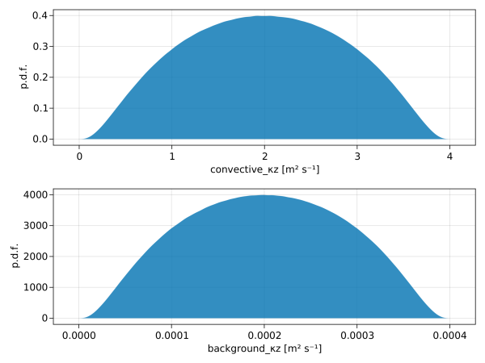
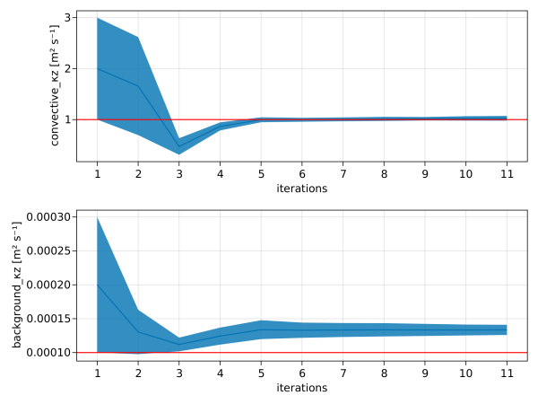
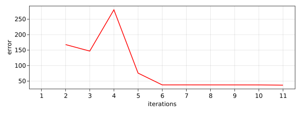

Perfect convective adjustment calibration with Unscented Ensemble Kalman Inversion
This example calibrates a convective adjustment model in the "perfect model context". In this context, synthetic observations are generated by a convective adjustment model with "true" parameters. The true parameters are then "rediscovered" by calibrating the model to match the synthetic observations.
We use the discrepency between observed and modeled buoyancy $b$ to calibrate the convective adjustment model. The calibration problem is solved by Ensemble Kalman Inversion. For more information about Ensemble Kalman Inversion, see the EnsembleKalmanProcesses.jl documentation.
The calibration is done here using Unscented Kalman Inversion. For more information about the algorithm refer to EnsembleKalmanProcesses.jl documentation.
Install dependencies
First let's make sure we have all required packages installed.
using Pkg
pkg"add OceanTurbulenceParameterEstimation, Oceananigans, Distributions, CairoMakie"We load some packages,
using OceanTurbulenceParameterEstimation
using LinearAlgebra
using EnsembleKalmanProcesses.ParameterDistributionStorageand reuse some some code from a previous example to generate observations,
examples_path = joinpath(pathof(OceanTurbulenceParameterEstimation), "..", "..", "examples")
include(joinpath(examples_path, "intro_to_inverse_problems.jl"))
data_path = generate_synthetic_observations()
observations = SyntheticObservations(data_path, field_names=:b, normalize=ZScore)SyntheticObservations with fields (:b,)
├── times: [0.0, 14400.0, 28800.0, 43200.0]
├── grid: RectilinearGrid{Float64, Oceananigans.Grids.Flat, Oceananigans.Grids.Flat, Oceananigans.Grids.Bounded}(Nx=1, Ny=1, Nz=32)
├── path: "convective_adjustment.jld2"
├── metadata: (:parameters, :grid, :coriolis, :closure)
└── normalization: Dict{Symbol, ZScore{Float64}}(:b => ZScore{Float64}(-3.537500000000092e-5, 1.4679348395235289e-5))Free parameters
We construct some prior distributions for our free parameters. We found that it often helps to constrain the prior distributions so that neither very high nor very low values for diffusivities can be drawn out of the distribution.
priors = (
convective_κz = ConstrainedNormal(0.0, 1.0, 0.0, 4 * θ★.convective_κz),
background_κz = ConstrainedNormal(0.0, 1.0, 0.0, 4 * θ★.background_κz)
)
free_parameters = FreeParameters(priors)FreeParameters with 2 parameters
├── names: (:convective_κz, :background_κz)
└── priors: Dict{Symbol, Any}
├── convective_κz => ConstrainedNormal{Float64}(0.0, 1.0, 0.0, 4.0)
└── background_κz => ConstrainedNormal{Float64}(0.0, 1.0, 0.0, 0.0004)and an ensemble_simulation,
Nparameters = length(priors)
Nensemble = 2 * Nparameters + 1
ensemble_simulation, closure★ = build_ensemble_simulation(observations; Nensemble)(Simulation{typename(Oceananigans.Models.HydrostaticFreeSurfaceModels.HydrostaticFreeSurfaceModel){typename(Oceananigans.Architectures.CPU), Float64}}
├── Model clock: time = 0 seconds, iteration = 0
├── Next time step: 10 seconds
├── Elapsed wall time: 0 seconds
├── Stop time: 12 hours
├── Stop iteration : Inf
├── Wall time limit: Inf
├── Callbacks: typename(OrderedCollections.OrderedDict) with 4 entries:
│ ├── stop_time_exceeded => typename(Oceananigans.Simulations.Callback)
│ ├── stop_iteration_exceeded => typename(Oceananigans.Simulations.Callback)
│ ├── wall_time_limit_exceeded => typename(Oceananigans.Simulations.Callback)
│ └── nan_checker => typename(Oceananigans.Simulations.Callback)
├── Output writers: typename(OrderedCollections.OrderedDict) with no entries
└── Diagnostics: typename(OrderedCollections.OrderedDict) with no entries, ConvectiveAdjustmentVerticalDiffusivity: (background_κz=0.0001, convective_κz=1.0, background_νz=1.0e-5, convective_νz=0.9))To visualize the prior distributions we randomly sample out values from then and plot the p.d.f.
using CairoMakie
using OceanTurbulenceParameterEstimation.EnsembleKalmanInversions: convert_prior, inverse_parameter_transform
samples(prior) = [inverse_parameter_transform(prior, x) for x in rand(convert_prior(prior), 50000000)]
samples_convective_κz = samples(priors.convective_κz)
samples_background_κz = samples(priors.background_κz)
f = Figure()
axtop = Axis(f[1, 1],
xlabel = "convective_κz [m² s⁻¹]",
ylabel = "p.d.f.")
axbottom = Axis(f[2, 1],
xlabel = "background_κz [m² s⁻¹]",
ylabel = "p.d.f.")
densities = []
push!(densities, density!(axtop, samples_convective_κz))
push!(densities, density!(axbottom, samples_background_κz))
The inverse problem
We can construct the inverse problem $y = G(θ) + η$. Here, $y$ are the observations and $G$ is the ensemble_model.
calibration = InverseProblem(observations, ensemble_simulation, free_parameters)InverseProblem{ConcatenatedOutputMap}
├── observations: SyntheticObservations of (:b,) on RectilinearGrid{Float64, Oceananigans.Grids.Flat, Oceananigans.Grids.Flat, Oceananigans.Grids.Bounded}(Nx=1, Ny=1, Nz=32)
├── simulation: Simulation on RectilinearGrid{Float64, Oceananigans.Grids.Flat, Oceananigans.Grids.Flat, Oceananigans.Grids.Bounded}(Nx=5, Ny=1, Nz=32) with Δt=10.0
├── free_parameters: (:convective_κz, :background_κz)
└── output map: ConcatenatedOutputMapNext, we construct an UnscentedKalmanInversion (UKI) object,
prior_mean = fill(0.0, Nparameters)
prior_cov = Matrix(Diagonal(fill(1.0, Nparameters)))
α_reg = 1.0 # regularization parameter
update_freq = 1
noise_covariance = 0.05^2 # error is about 5%
uki = UnscentedKalmanInversion(calibration, prior_mean, prior_cov;
noise_covariance = noise_covariance, α_reg = α_reg, update_freq = update_freq)EnsembleKalmanInversion
├── inverse_problem: InverseProblem
├── parameter_distribution: EnsembleKalmanProcesses.ParameterDistributionStorage.ParameterDistribution
├── ensemble_kalman_process: EnsembleKalmanProcesses.EnsembleKalmanProcessModule.EnsembleKalmanProcess{Float64, Int64, EnsembleKalmanProcesses.EnsembleKalmanProcessModule.Unscented}
├── mapped_observations: 128-element Vector{Float64}
├── noise_covariance: 128×128 Matrix{Float64}
├── inverting_forward_map: OceanTurbulenceParameterEstimation.EnsembleKalmanInversions.var"#G#21"
├── iteration: 0
└── dropped_ensemble_members: Set{Any}()and perform few iterations to see if we can converge to the true parameter values.
iterate!(uki; iterations = 10)(convective_κz = 1.0237052933797495, background_κz = 0.0001333023426906672)Last, we visualize the outputs of UKI calibration:
θ_mean, θθ_cov, θθ_std_arr, error = UnscentedKalmanInversionPostprocess(uki)
N_iter = size(θ_mean, 2)
f = Figure(resolution = (800, 600))
ax1 = Axis(f[1, 1],
xlabel = "iterations",
xticks = 1:N_iter,
ylabel = "convective_κz [m² s⁻¹]")
ax2 = Axis(f[2, 1],
xlabel = "iterations",
xticks = 1:N_iter,
ylabel = "background_κz [m² s⁻¹]")
band!(ax1, 1:N_iter, θ_mean[1, :] .+ θθ_std_arr[1, :], θ_mean[1, :] .- θθ_std_arr[1, :])
lines!(ax1, Float64.(1:N_iter), θ_mean[1, :])
hlines!(ax1, [θ★.convective_κz], color=:red)
band!(ax2, 1:N_iter, θ_mean[2, :] .+ θθ_std_arr[2, :], θ_mean[2, :] .- θθ_std_arr[2, :])
lines!(ax2, 1:N_iter, θ_mean[2, :])
hlines!(ax2, [θ★.background_κz], color=:red)
xlims!(ax1, 0.5, N_iter+0.5)
xlims!(ax2, 0.5, N_iter+0.5)
and the error:
f = Figure(resolution = (800, 300))
lines(f[1, 1], 2:N_iter, error, color = :red, linewidth = 2,
axis = (xlabel = "iterations",
xticks = 1:N_iter,
ylabel = "error"))
xlims!(0.5, N_iter+0.5)
This page was generated using Literate.jl.